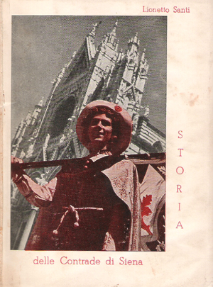

- CINQUE SECOLI DI OPERE A STAMPA SULLE CONTRADE E IL PALIO -
- DAL DOPOGUERRA AL 1999 -
|
A coloro che usano il computer
e vogliono fare una ricerca all'interno di questa pagina,
consigliamo di cliccare sopra queste righe
e digitare i tasti CTRL+F .
Si aprirà una finestra dove poter scrivere la parola chiave.
Cliccando sull'icona del libro si accede alla immagine ingrandita della copertina, a una eventuale recensione più ampia e a eventuali ristampe.

 |
(1945) - Virgilio Grassi - IL PALIO DI SIENA - Ticci Editore Libraio, Siena, 1945
 |
(1945) - Vittoria Bonajuti Tarquini - THE PALIO OF SIENA - Ticci Editore Libraio, Siena, 1945
Testo in inglese.
 |
(1946) - Gianferli (al secolo Fernando Giannelli) - VOCI DI CONTRADA - Sonetti in vernacolo preceduti da una sintesi storica del Palio – S. A. Poligrafica, Siena, 1946
 |
(1946) - Contrada della Selva - MEMORIA SULLA RICOSTITUZIONE DELLA SOCIETA' DEL "RINOCERONTE" - A cura di Mario Verdone – Siena, Dalle Stanze della Società, 27 ottobre 1946
 |
(1947) - Lionetto Santi (al secolo Arrigo Pecchioli) - SIENA E IL SUO PALIO - Supplemento al n.2 della rivista Ausonia – Siena, La Poligrafica, 1947
Opuscolo con disegni di Marzi, Scattina e Viligiardi. Una ulteriore edizione verrà stampata nel 1980.
 |
(1947) - Contrada della Chiocciola - LA FONTANA - (pregevole scultura del compianto Prof. Fulvio Corsini) – Siena, La Poligrafica, 1947
A cura della Sezione Piccoli Chiocciolini nel XIV anniversario della sua fondazione in memoria di Orlando Peccianti in occasione della inaugurazione
della Fontanina avvenuta il 29 giugno per la Festa Titolare.
 |
(1948) - Lionetto Santi (al secolo Arrigo Pecchioli) - IL PALIO DI SIENA - Siena, Edizioni Tutta Siena di E.Frullani, 1948
In circa quaranta pagine vengono sinteticamente riassunti 500 anni di storia
del Palio, il suo regolamento, cenni sul corteo storico, la descrizione delle contrade,
le statistiche delle vittorie e un simpatico dizionario paliesco. Nel 1949 uscirono la 2ª e 3ª edizione dal titolo: "Il Palio com'è". Nel 1950 fu edita la 4ª edizione con il titolo: "Palio".
 |
(1948) - SIENA E IL PALIO - Castelnuovo Berardenga, Apollo Editrice, Tip. Baroni, 1948
 |
(1948) - Lionetto Santi (al secolo Arrigo Pecchioli) - QUELLI DEL MANGIA - Siena, Tip. Nuova Siena, 1948
Racconti inerenti alla vita contradaiola. Copertina di Mario Picchi arricchita dalle chine di Marzi, Picchi, Giannelli e Joni. La copertina di questa prima edizione fu realizzata in due colori diversi. Una nuova edizione venne stampata nel 1951.
 |
(1948) - Virgilio Grassi - IL PALIO DI SIENA 2 LUGLIO • 16 AGOSTO - Siena, Grafiche Meini, 1948
Copertina di Dino Rofi. Semplice opuscolo dato in omaggio agli ospiti che convennero a Siena in occasione del Convegno
di studi di Economia e Politica Industriale.
 |
(1949) - Luigi Barbetti - LA PACE - Più che l'amore il Palio. Scena a due - Teatro vernacolo senese – Siena, La Poligrafica, 1949
 |
(1949) - Lionetto Santi (al secolo Arrigo Pecchioli) - IL PALIO COM'E' - Consigli al Turista – Siena, Ed. "Tutta Siena" di Emilio Frullani, s.d. [ma 1949]
 |
(1949) - Lionetto Santi (al secolo Arrigo Pecchioli) - IL PALIO COM'E' - Siena, s.n.t., s.d. [ma 1949]
Copertina siglata ST. Opuscolo pubblicitario della ditta Sapori.
 |
(1949) - Comune di Siena - RELAZIONE DELLA COMMISSIONE PER IL REGOLAMENTO DEL PALIO - Deliberazione del Consiglio Comunale – Siena, Tipografia Combattenti, 1949
 |
(1949) - Comune di Siena - REGOLAMENTO PER IL PALIO - Siena, Tipografia Combattenti, 1949
In questo secolo venne ristampato da altre Case Editrici: nel 1967 (a cura del Campo di Siena), nel 1972?, 1973, 1981, 1982, 1985, 1988, 1995, 1999.
 |
(1950) - Virgilio Grassi - I CONFINI DELLE CONTRADE - secondo il Bando di Violante Beatrice di Baviera – Edizione a cura del Comitato Amici del Palio – sotto gli auspici del Magistrato delle Contrade – Siena, Tipografia ex Cooperativa, 1950
Intruduzione di Guido Chigi Saracini. Tutti i territori delle Contrade secondo i confini stabiliti dalle disposizioni del Bando di Violante di Baviera, emanato nel 1730, con
il testo integrale e le cause che portarono a redigere tale normativa, tutt'ora vigente.
 |
(1950) - Lionetto Santi (al secolo Arrigo Pecchioli) - PALIO - Quarta Edizione – Siena, Tip. San Giovanni, 1950
Ristampa della prima edizione uscita nel 1948.
 |
(post 1950) - Alberto Tailetti - IL PALIO - Siena, Edizioni “Tutta Siena” di Emilio Frullani, s.d. [post 1950]
Copertina illustrata da Vittorio Zani. Seconda edizione di questo opuscolo già stampato sul finire degli anni '20.
 |
(1951) - Lionetto Santi (al secolo Arrigo Pecchioli) - QUELLI DEL MANGIA - Siena, Contrada editrice, Tip. Nuova Siena, 1951
Copertina di Enea Marroni. Nuova edizione di racconti inerenti alla vita contradaiola analoga alla precedente del 1948.
 |
(1951) - Carlo Fontani - "SERENATE" - Sonetti in vernacolo senese di C.Fontani - Siena, Ed.Frullani, 1951
Copertina e disegni di Enea Marroni. Prefazione di Alberto Tailetti. Fra i sonetti, alcuni sono dedicati al Palio.
 |
(1952) - Lionetto Santi (al secolo Arrigo Pecchioli) - STORIA DELLE CONTRADE DI SIENA - Siena, Ed. di Contrada, Tip. Ex Cooperativa, 1952
 |
(1953) -
Azienda Autonoma di Turismo di Siena (a cura di) - IL PALIO DI SIENA - 2 luglio 16 agosto - s.n.t. - Siena - 1953
Copertina da un bozzetto di Dino Rofi. Estratto dalla rivista "Terra di Siena".
 |
(1953) - Silvio Gigli - LA CONTRADA - Milano, Ed. “Amena” Garzanti, 1953
Romanzo.
 |
(1953) - Alberto Tailetti - IL PALIO - Siena, Casa Editrice Emilio Frullani, 1953
Copertina con sigla dell'autore. Opuscolo divulgativo.
 |
(1953) - Contrada della Chiocciola - COSTITUZIONI - Siena, s.n.t., 1953
Ristampato nel 1983, nel 1988 e nel 1997 con i dovuti aggiornamenti.
 |
(1953) - Lionetto Santi (al secolo Arrigo Pecchioli) - LA CONTRADA DELLA TORRE - Nel Centenario della Vittoria riportata nel Campo il 2 luglio 1853 – Siena, Ed. “Il Campo di Siena”, 1953
 |
(1954) - Vasco Bruschelli - ORIGINE E STORIA DEL RIONE E DELLA CONTRADA DI VAL DI MONTONE - Contrada di Valdimontone – Siena, Tip. Combattenti, 1954
Ristampato nel 2003 dalle Ed. Il Leccio.
 |
(1954) - Luciano Fini - FIOR DI VERBENA - Sonetti in vernacolo senese – Siena, Amedeo Martini Editore, 1954
Copertina disegnata da Luciano Ricci. Prefazione di Momo Giovannelli. Raccolta di sonetti di ambiente contradaiolo di uno dei grandi poeti vernacolieri senesi.
 |
(1954) - Virgilio Grassi - IL PALIO DI SIENA - 2 luglio 16 agosto – Siena, Tip. La Poligrafica, 1954
Opuscolo di 16 pagine patrocinato dall'Azienda Autonoma per il Turismo di Siena.
 |
(1954) - Alfredo Liberati - ORIGINE E STORIA DELLA EX CHIESA DI SAN MARCO IN SIENA - La Contrada della Chiocciola [...] offre a ricordo del fausto avvenimento ai Benemeriti Patroni e Protettori. 2 Luglio 1954 – Siena, La Poligrafica, 1954
Pubblicazione edita per la inaugurazione del "Leone di San Marco" donato dal comune di Venezia.
 |
(1954) - Comune di Siena - IL PALIO DELLE CONTRADE DI SIENA - Cenno storico e schema del Corteo – Palio del 2 luglio 1954 - Siena, Arti grafiche Lazzeri, 1954
In quel periodo il Comune riproponeva questa piccola guida per ogni Palio: iniziativa incominciata sul finire degli anni '20 e continuata fino agli anni '60.
 |
(1955) - Contrada della Chiocciola - ORIGINE E STORIA DELL'EX ORATORIO AL "BIVIO DI S.MARCO" [...] - Notizie desunte dall'Archivio della Contrada - Siena, s.n.t., 1955
Edito per il III Centenario della costruzione (1655 - 1955) e dedicato ai Benemeriti Patroni e Protettori.
 |
(1955) - Nobil Contrada del Bruco - 1° FESTIVAL DELLA PARODIA BRUCAIOLA A.D. 1955 - Siena, s.n.t., 1955
 |
(1955) - Alberto Tailetti - IL PALIO - Siena, Casa Editrice Emilio Frullani, 1955
Pratica guida pubblicata per i turisti, arricchita da interessanti immagini del Palio del luglio 1955.
Ristampato nel 1959 e nel 1962.
 |
(1955) - Lea Bindi Senesi - NEROCCIO DELLA TARTUCA - Torino, Società Editrice Internazionale, 1955
Copertina e illustrazioni di Dario Gobbi. Racconto per ragazzi.
 |
(1955) - Giovanni De Gregorio - GIAN LUPETTO - Brescia, “La Scuola” Editrice, 1955
Storia di Siena, del suo Palio e delle sue contrade narrata ai ragazzi con illustrazioni di Gaspare De Fiore.
 |
(post 1955) - Bruno Marzi - IL PALIO DI SIENA - Siena, Ed. Libreria Ticci, presso Poligrafica Alterocca di Terni - s.d. [post 1955]
Libretto con i bozzetti di Bruno Marzi dei nuovi costumi rinnovati nel 1955. Venne pubblicata anche un'edizione in lingua inglese.
 |
(post 1955) - Alberto Tailetti - IL PALIO - Siena, Editore Emilio Frullani, s.d., [post 1955]
Opuscolo divulgativo.
 |
(post 1955) - Alberto Tailetti - IL PALIO DI SIENA - Siena, Edizioni Emilio Frullani, s.d., [post 1955]
Copertina illustrata da Gualtiero Anichini. Opuscolo divulgativo.
 |
(post 1955) - Alberto Tailetti - IL PALIO DI SIENA - Siena, Ed. Emilio Frullani, s.d., [post 1955]
Opuscolo divulgativo omaggio dell'Ente Provinciale per il Turismo di Siena.
 |
(1957) - Silvio Gigli - IL PALIO DI SIENA - Siena, Stefano Venturini Editore, 1957
Copertina illustrata da Bruno Marzi. Guida destinata ai non senesi che traccia una sintesi di cosa sia il Palio e del suo svolgimento con alcuni riferimenti storici. Ristampato nel 1960. Altra edizione nel 1966 a cura di Nicola Moneta di Milano.
 |
(1957) -
Alberto Coradeschi - NOI DELLA SOCIETA' DEL NICCHIO - Siena, Tip. L'Ancora, 1957
 |
(1957) - Raffaello Giannelli - LA RAGAZZA DEL PALIO - I edizione – Milano, Arnoldo Mondadori, 1957
Raffaello Giannelli è nato a Milano da padre senese e madre livornese. La sua passione per lo scrivere ha prevalso sulle sue varie attività di commerciante, orafo, aviatore, sportivo e pittore.
Da questo libro col quale egli inizia la sua attività di romanziere è stata tratta una fortunata riduzione cinematografica.
 |
(1957) - Gabriele Mandel - SIENA LA CITTA' DEL PALIO - Milano, Silvana Editoriale d'Arte, 1957
Pubblicazione con 70 illustrazioni di cui 11 a colori. Nel 1959 uscì la versione in inglese.
 |
(1958) - Giovanni Cecchini e Dario Neri - IL PALIO DI SIENA - Milano, Electa Editrice, 1958
A cura del Monte dei Paschi di Siena. Il Cecchini-Neri rappresenta una delle pietre miliari dell'editoria paliesca. Volume elegante e prezioso, una rarità per gli appassionati. Ai testi scritti con assoluta competenza si aggiunge una galleria fotografica a colori di assoluto rigore.
E' particolarmente apprezzato perché è stato il primo testo a riportare integralmente la documentazione paliesca conservata all'Archivio di Stato di Siena dal primo Trecento. Esistono anche edizioni in lingua francese, inglese e spagnolo.
 |
(1958) -
Contrada della Chiocciola - Domenica 29 Giugno 1958 - [NOTIZIE DI UN SECOLO FA (1858)] - Siena, Tipografia Artigiana, 1958
Opuscolo di quattro pagine stampato in occasione della Festa Titolare, che ricorda la vittoria ottenuta il 16 agosto 1858, nonché l'inizio dei lavori
per la posa di una nuova pavimentazione a mattonelle bianche e nere nella chiesa della contrada, eseguiti nello stesso anno.
 |
(1958) - Enrico Sozzi - Contrada della Pantera - 21 Settembre 1958[LA CONTRADA DELLA PANTERA TORNA AD UFFIZIARE LA CHIESA DI S.QUIRICO DOPO 145 ANNI] - Siena, Tip. Senese, 1958
 |
(1959) - Alberto Tailetti - IL PALIO - Omaggio dell'Ente Provinciale per il Turismo di Siena – Siena, Ed. Frullani, 1959
Opuscolo divulgativo.
 |
(1959) - Bruno Tanganelli (Tambus) e Carlo Fontani - SIAMO FATTI COSI' - Il Palio intimo ideato e realizzato da Tambus e Carlo Fontani - Siena, Publisena, 1959
Con numerose vignette di Tambus.
 |
(1959) - Antonio Zieger (a cura di) - INCONTRO TRENTO-SIENA - Trento, Ed. Centro Culturale “Fratelli Bronzetti”, 1959
Pubblicazione a ricordo del gemellaggio tra la Contrada della Tartuca e la città di Trento.
 |
(1959) - Valentino della Selva (al secolo Valente Valenti) - LA CONTRADA E LA SOCIETA' DELLA SELVA - Cenni Storico-Artistici – Siena, Tip. Periccioli, 1959
 |
(1960) - Paolo Cesarini - IL PALIO - Firenze, Ed. Olimpia, 1960
Prefazione di Giorgio Bocca. Libro di divulgazione paliesca ristampato dalle Edizioni Lombardi nel 1988 con l'aggiunta di
suggestive foto di Pepi Merisio. È indicato per chi si avvicina al Palio e vuole scoprirne gli aspetti essenziali; ad ogni Contrada è dedicata una pagina nella quale ne viene tratteggiata la storia.
 |
(1960) - Marguerite Henry - GAUDENZIA PRIDE OF THE PALIO - Rand McNally & Co. - Chicago, New York, San Francisco, 1960
Illustrato da Lynd Ward. Libro per ragazzi che racconta la fantastica estate del 1954 di Gaudenzia e del suo fantino Vittorino.
La prima edizione è del 1955. E' stato ristampato in italiano dalle Edizioni Martello di Milano nel 1961, con la traduzione di Raffaella Lotteri. Una ulteriore edizione è stata pubblicata nel 2008 da Betti, tradotta da Roberta Civale con il titolo: Gaudenzia onore del Palio di Siena.
 |
(1960) - Contrada della Lupa - LA CONTRADA DELLA LUPA E LA SUA CHIESA DI SAN ROCCO - Siena, Tip. Meini, 1960
 |
(1960) - Nobile Contrada dell'Aquila - LE COSTITUZIONI - Siena, Arti Grafiche Ticci, 1960
Ristampato nel 1966 dalla Tip. Olimpia (Roma) e nel 1978 dalla Tip. Senese con i dovuti aggiornamenti.
 |
(1961) - Maria Luisa Rizzatti - SIENA "IL PALIO" - Siena, Ediz. a cura della Azienda Autonoma di Turismo, 1961
 |
(1961) - Contrada della Tartuca - CAPITOLI STATUTARI - Siena, Tip. S.Giovanni, 1961
A cura di Ottaviano Neri. Ristampato con i dovuti aggiornamenti nel 1979 e nel 1989.
 |
(1962) - AA.VV. - CONTRADA CAPITANA DELL'ONDA - Edito in occasione dell'inaugurazione della nuova "sede museo" -
Siena, s.n.t., 1962
 |
(1962) - Mario Verdone - LA GLORIA DEL RINOCERONTE - Dialogo tra Eugene Ionesco e il Rinoceronte - Contrada della Selva - Siena, 1962
Verdone, appassionato contradaiolo della Selva, elebora la commedia "La Gloria del Rinoceronte", edita dalla stessa Contrada, nel quadro dei festeggiamenti che seguirono la vittoria ottenuta nel palio di agosto di quell'anno, con la quale sbeffeggia il grande drammaturgo.
 |
(1963) - Contrada della Chiocciola - 1933-1963 SEZIONE PICCOLI CHIOCCIOLINI - Siena, s.n.t., 1963
Numero unico edito in occasione del 30° anniversario della sezione Piccoli Chiocciolini.
 |
(1963) - Contrada della Selva - LA TUA FIGURA DA VICINO - Siena, Tip. Periccioli, 1963
Opuscolo dedicato al N.H. Umberto Bonelli, zio di Rosanna Bonelli, la donna fantino detta Diavola o Rompicollo.
 |
(1963) - Nobil Contrada dell'Aquila - SIENA 27 OTTOBRE 1963 - Siena, s.n.t., 1963
Opuscolo che celebra l'inaugurazione della fontanina della contrada, opera dello scultore senese prof. Bruno Buracchini.
 |
(1964) - Alberto Tailetti - GLI ORATORI DELLE CONTRADE DI SIENA - Siena, Lorenzo De Santi Editore, Tip. La Galluzza di U. Periccioli, s.d. [ma 1964]
A lato di quella civile troviamo nelle Contrade la vita religiosa espletata nei propri oratori, ricchi di arte e di memorie.
Essa non poteva mancare in una città permeata di misticismo e devozione
 |
(1964) - Michele Cantucci - LA NATURA GIURIDICA DELLA CONTRADA - Siena, Accademia degli Intronati, 1964
Estratto da Miscellanea di Studi in memoria di Giovanni Cecchini.
 |
(1965) - Fernando Giannelli - IL PALIO DI SIENA - A cura dell’Istituto Sclavo di Siena – Milano, Elli & Pagani, 1965
Contiene 24 tavole di Bruno Marzi realizzate nel 1963
 |
(1965) - Contrada della Selva - SELVA IMMORTALE - Siena, Tip. Periccioli, 1965
Memoria del Selvaiolo scomparso: dedicato a Francesco Bindi Sergardi.
 |
(1966) - Contrada della Selva - IL PRIORE BUONO - Siena, Tip. Periccioli, 1966
Pubblicazione dedicata alla memoria del N.H. Francesco Bindi Sergardi.
 |
(1967) - Giulio Pepi - LE CONTRADE E IL PALIO - Siena, Ed. La Diana, 1967
Libro di impostazione classica che prende in esame i vari aspetti del rito della grande festa senese.
 |
(1967) - Mons. Bruno Ancilli e Mons. Aurelio Mecatti - RITUALE DELLE CONTRADE DI SIENA - Siena, Ed. Cantagalli, 1967
 |
(1967) - Contrada di Valdimontone - COSTITUZIONE DELLA CONTRADA DI VALDIMONTONE - Siena, Tip. Periccioli, 1967
Ristampato con i dovuti aggiornamenti nel 1991.
 |
(1967) - Paolo Nardi - INVENTARIO DELL'ARCHIVIO DELLA CONTRADA DELLA SELVA - Con note storiche introduttive – Dalle Stanze della Contrada della Selva – Siena, Tip. Periccioli, 1967
E' il primo inventario pubblicato fra gli archivi storici delle Contrade.
 |
(1967) - Ugo Periccioli - LA CONTRADA DELLA SELVA NEL TRENTENNIO 1937-1967 - Contrada della Selva – Siena, Tip. Periccioli, 1967
 |
(1967) - Alberto Tailetti - ANEDDOTI CONTRADAIOLI - Roma, Ed. Olimpia, 1967
Disegni di Luigi Rosini. Ricca raccolta di aneddoti tradizionali contradaioli, dalle gustose prese in giro agli avversari sconfitti, ai ricordi di cavalli e di fantini. Piacevole da leggere, con molti spunti interessanti.
 |
(1967) - Lorenzo Cesarini (al secolo Gianni Roggini) - DU' CHIACCHERE - Siena, Ed. Il Campo, 1967
Raccolta di racconti in chiave satirica sulla società senese e il mondo contradaiolo nell'arco temporale di un anno.
Esilarante la sua interpretazione umoristica della battaglia di Montaperti.
 |
(1968) - Roudolph (al secolo Raoul Traverso) e Giorgio Bellavitis - IL PALIO DI SIENA - I Capolavori dei fumetti - Roma, EDI.PER, 1968
Un avvincente fumetto che uscì nel numero 4 del 25 gennaio 1968 del settimanale Vitt.
Il racconto riprende come fondamentale motivo quello di un glorioso mantello crociato
di Cavaliere, assunto a simbolo del primo drappellone del Palio. Si tratta di una vicenda ambientata
in un mondo medioevale, tendente a riassumere il carattere battagliero e mistico dei Senesi.
 |
(1968) - Nepemo - SIENA E IL PALIO - Raccolta di cenni storici – Siena, Arti Grafiche Ticci, 1968
Notizie storiche e poesie popolari su Siena e il Palio attinte da "Storia Politica di Siena" di Langton Douglas e da "L'anima del Palio" di Giovanni Righi Parenti.
 |
(1968) - Momo Giovannelli - SONETTI IN VERNACOLO SENESE - Siena, Ugo Periccioli Tipografo Editore, 1968
Copertina di Emilio Barbucci. Ristampa di "Sena Vetus... Nova" del 1910 con l'aggiunta di circa 60 composizioni inedite.
 |
(1968) - Glauco Lamioni - PALIO, PAZZIA E GIOVINEZZA D'UNA CITTA' - Siena, Ed. Il Leccio, 1968
Copertina di Emilio Montagnani. Il libro è una specie di bollettino medico della febbre contradaiola, che culmina nel delirio del Palio. Ristampato nel 1984.
| | | | | | | | | | | | | | | | | | | | | | | | | | | | | | | | | | | | | | | | | | | | | | | | | | | | | | | | | | | | | | | | | | | | | | | | | | | | | | | | | |